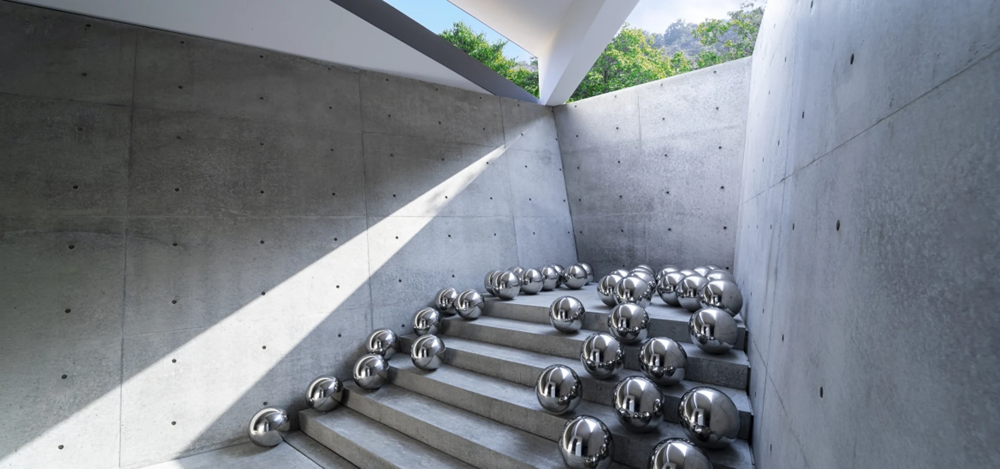
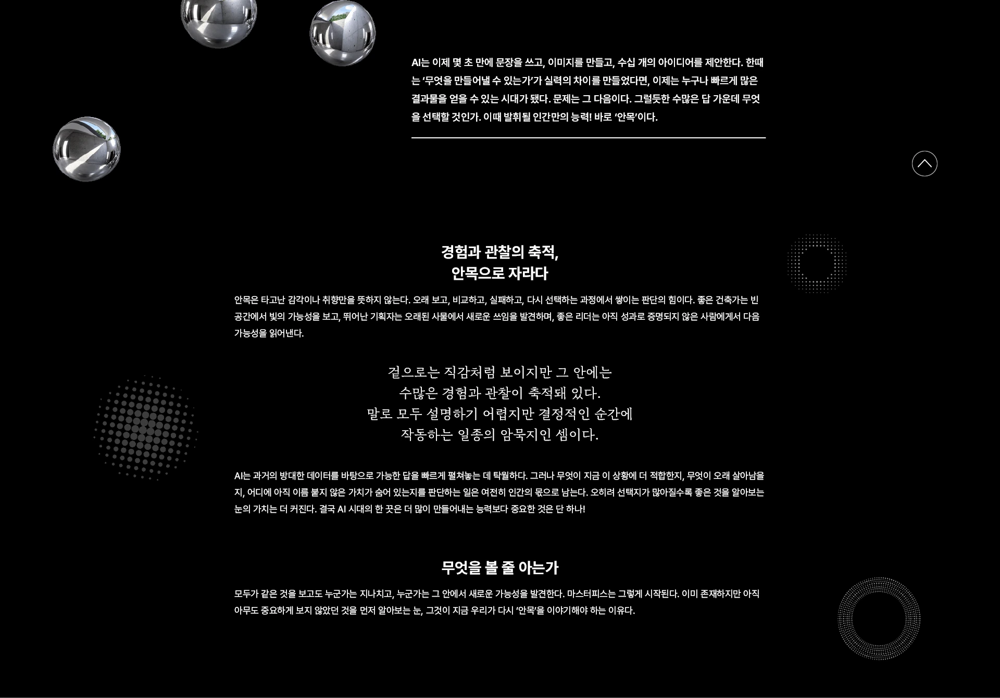
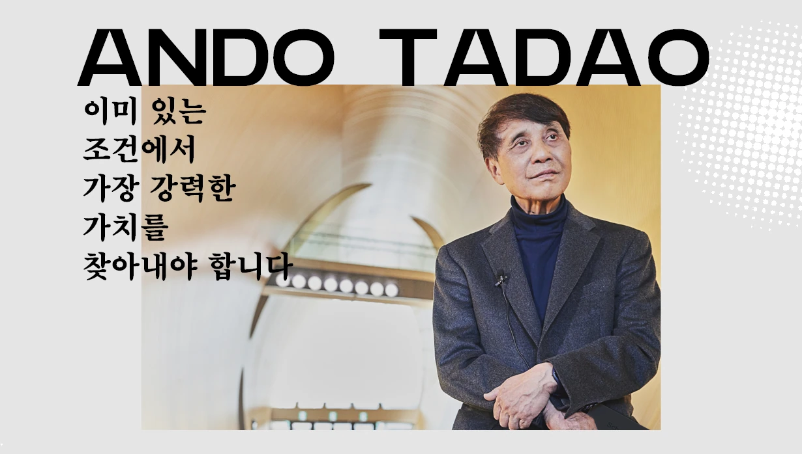
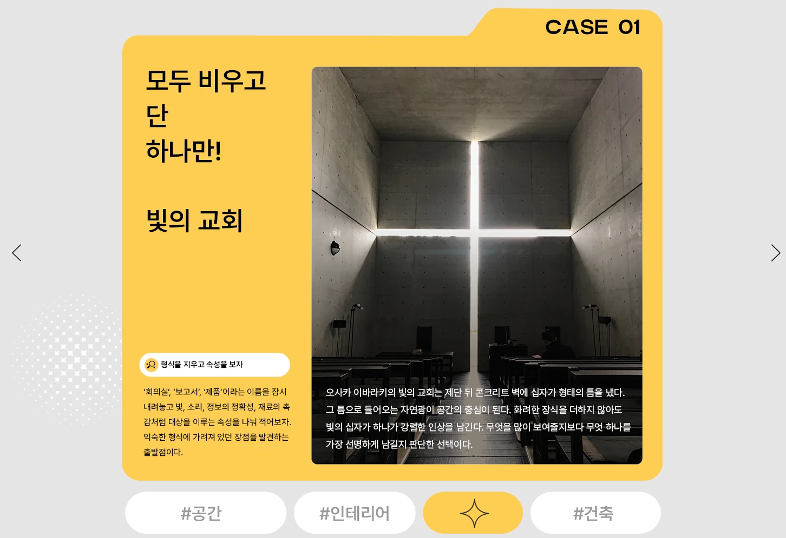
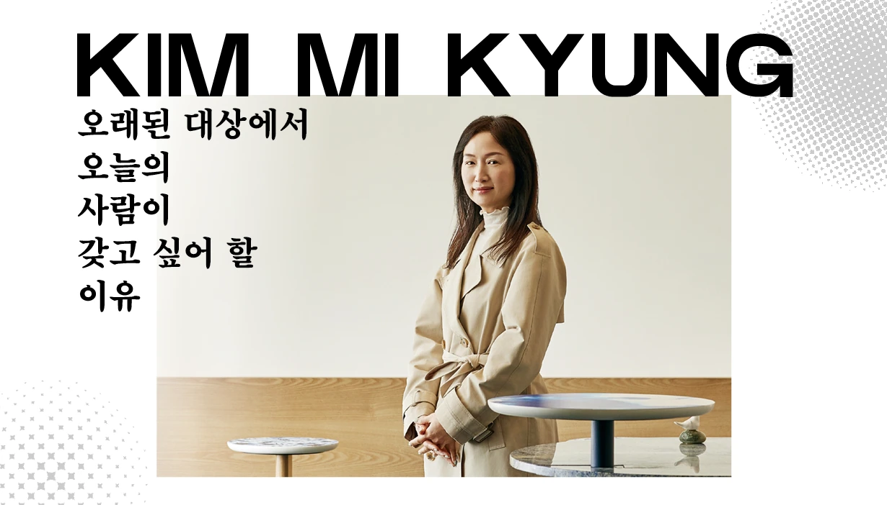
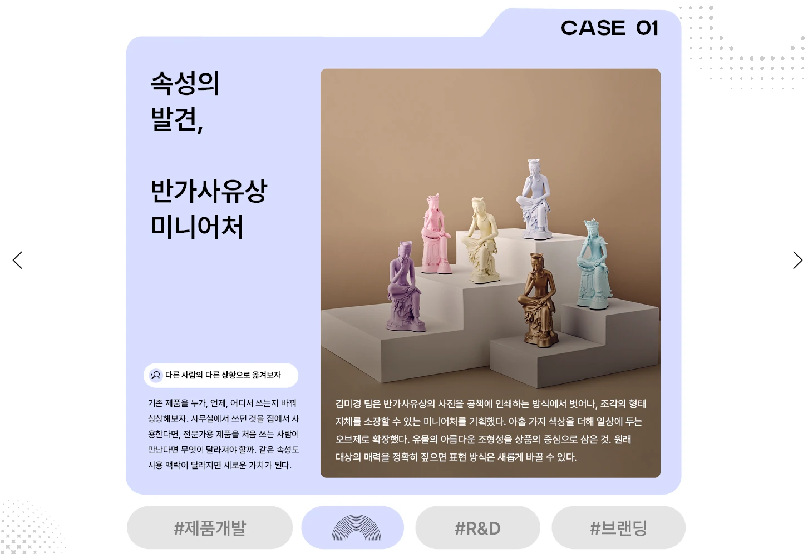
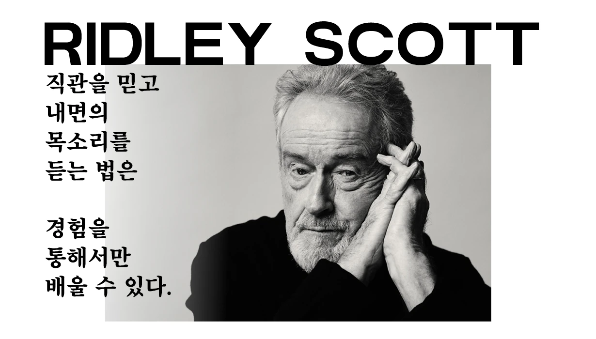
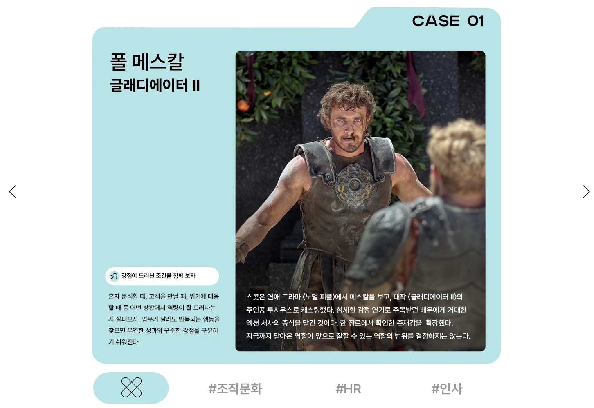

남다른 안목 Visionary
AI 시대를 사는 휴먼 한 끗의 차이를 만들다!
 AI 요약 | AI 시대에 필요한 안목
AI 요약 | AI 시대에 필요한 안목
AI가 다양한 답을 빠르게 내놓는 시대에는 상황에 맞는 가치를 알아보고 선택하는 안목이 중요하다. 안도 다다오는 빛 하나로 공간을 완성했고, 김미경 팀은 반가사유상의 조형미를 일상에서 즐기는 상품으로 바꿨다. 리들리 스콧은 폴 메스칼에게서 새로운 장르의 가능성을 봤다. 세 사례는 관찰과 경험이 남다른 판단으로 이어지는 과정을 보여준다.

경험과 관찰의 축적, 안목으로 자라다
AI는 이제 몇 초 만에 문장을 쓰고, 이미지를 만들고, 수십 개의 아이디어를 제안한다. 한때는 ‘무엇을 만들어낼 수 있는가’가 실력의 차이를 만들었다면, 이제는 누구나 빠르게 많은 결과물을 얻을 수 있는 시대가 됐다. 문제는 그 다음이다. 그럴듯한 수많은 답 가운데 무엇을 선택할 것인가. 이때 발휘될 인간만의 능력! 바로 ‘안목’이다.
안목은 타고난 감각이나 취향만을 뜻하지 않는다. 오래 보고, 비교하고, 실패하고, 다시 선택하는 과정에서 쌓이는 판단의 힘이다. 좋은 건축가는 빈 공간에서 빛의 가능성을 보고, 뛰어난 기획자는 오래된 사물에서 새로운 쓰임을 발견하며, 좋은 리더는 아직 성과로 증명되지 않은 사람에게서 다음 가능성을 읽어낸다.
겉으로는 직감처럼 보이지만 그 안에는
수많은 경험과 관찰이 축적돼 있다.
말로 모두 설명하기 어렵지만 결정적인 순간에
작동하는 일종의 암묵지인 셈이다.
AI는 과거의 방대한 데이터를 바탕으로 가능한 답을 빠르게 펼쳐놓는 데 탁월하다. 그러나 무엇이 지금 이 상황에 더 적합한지, 무엇이 오래 살아남을지, 어디에 아직 이름 붙지 않은 가치가 숨어 있는지를 판단하는 일은 여전히 인간의 몫으로 남는다. 오히려 선택지가 많아질수록 좋은 것을 알아보는 눈의 가치는 더 커진다. 결국 AI 시대의 한 끗은 더 많이 만들어내는 능력보다 중요한 것은 단 하나!
무엇을 볼 줄 아는가
모두가 같은 것을 보고도 누군가는 지나치고, 누군가는 그 안에서 새로운 가능성을 발견한다. 마스터피스는 그렇게 시작된다. 이미 존재하지만 아직 아무도 중요하게 보지 않았던 것을 먼저 알아보는 눈, 그것이 지금 우리가 다시 ‘안목’을 이야기해야 하는 이유다.

공간을 읽는
예리한 눈,
건축가 안도 다다오
안도 다다오는 정규 건축교육을 받지 않았다. 책을 읽고 실제 건물을 찾아다니며 스케치하는 방식으로 건축을 독학했다. 그렇게 자신만의 관찰과 판단을 쌓은 건축가는 1995년 프리츠커상을 받았다. 건축계 최고 권위의 상이 주목한 것은 빛과 그림자, 바람과 물을 건축 안으로 끌어들이는 그의 독창적인 공간이었다. 그의 건축에서 읽을 수 있는 안목은 그곳에 이미 있는 가치를 알아보는 능력이다. 같은 빛과 풍경도 무엇을 남기고 어떻게 드러내느냐에 따라 전혀 다른 경험이 된다.

모두 비우고 단 하나만! 빛의 교회
‘회의실’, ‘보고서’, ‘제품’이라는 이름을 잠시 내려놓고 빛, 소리, 정보의 정확성, 재료의 촉감처럼 대상을 이루는 속성을 나눠 적어보자. 익숙한 형식에 가려져 있던 장점을 발견하는 출발점이다.
오사카 이바라키의 빛의 교회는 제단 뒤 콘크리트 벽에 십자가 형태의 틈을 냈다. 그 틈으로 들어오는 자연광이 공간의 중심이 된다. 화려한 장식을 더하지 않아도 빛의 십자가 하나가 강렬한 인상을 남긴다. 무엇을 많이 보여줄지보다 무엇 하나를 가장 선명하게 남길지 판단한 선택이다.
LS일렉트릭인의 안목을 깨우는 1%
- Q1
우리 제품·공간·제안서에서 고객이 기억해야 할 장점 단 하나는 무엇인가?
- Q2
새롭게 바꾸는 과정에서 고객이 이미 만족하는 장점까지 없애고 있지는 않은가?
- Q3
고객이 고르고, 설치하고, 사용하는 과정에서 가장 번거로워하는 단계는 어디인가?

사물의 가치를
찾는 눈,
김미경 국립박물관문화재단
기업에서 상품기획과 마케팅을 하던 김미경은 2016년 국립박물관문화재단으로 자리를 옮겼다. 그는 유물의 형태와 이야기를 사람들이 일상에서 즐길 수 있는 상품으로 연결하는 일에 참여해왔다. 박물관을 방문한 김에 사는 기념품에서, 상품을 사기 위해 박물관을 찾는 소비로 변화가 이어졌고, 2025년 박물관 문화상품 매출은 400억 원을 넘겼다. 그의 안목은 유물의 가치를 지키면서도 사람들이 지금 반응할 매력을 골라내는 능력이다. 무엇을 그대로 남기고, 무엇을 오늘의 생활에 맞게 바꿀지 판단하는 일이 상품의 출발점이 된다.

속성의 발견, 반가사유상 미니어처
기존 제품을 누가, 언제, 어디서 쓰는지 바꿔 상상해보자. 사무실에서 쓰던 것을 집에서 사용한다면, 전문가용 제품을 처음 쓰는 사람이 만난다면 무엇이 달라져야 할까. 같은 속성도 사용 맥락이 달라지면 새로운 가치가 된다.
김미경 팀은 반가사유상의 사진을 공책에 인쇄하는 방식에서 벗어나, 조각의 형태 자체를 소장할 수 있는 미니어처를 기획했다. 아홉 가지 색상을 더해 일상에 두는 오브제로 확장했다. 유물의 아름다운 조형성을 상품의 중심으로 삼은 것. 원래 대상의 매력을 정확히 짚으면 표현 방식은 새롭게 바꿀 수 있다.
LS일렉트릭인의 안목을 깨우는 1%
- Q1
이미 가진 소재·기술의 특성 중 다른 고객에게 더 큰 장점이 될 것은 무엇인가?
- Q2
우리가 홍보하는 강점과 고객이 실제로 제품을 선택한 이유는 일치하는가?
- Q3
고객이 샘플을 만지거나 비교 시연을 해봐야 비로소 알 수 있는 장점은 무엇인가?

사람의
가능성을 찾는 눈,
리들리 스콧
〈에이리언〉, 〈블레이드 러너〉, 〈글래디에이터〉를 만든 리들리 스콧은 광고와 TV 현장에서 경험을 쌓은 뒤 마흔 무렵 첫 장편영화를 선보였다. 수많은 화면과 배우를 관찰하며 쌓은 판단을 그는 ‘직관’이라고 부르며, 그것을 믿는 능력은 경험에서 나온다고 말한다. 최근 그의 작품에 출연한 폴 메스칼, 조디 코머, 바네사 커비는 이미 다른 작품에서 주목받던 배우들이다. 이들의 캐스팅을 안목의 관점에서 읽으면, 기존 역할에서 확인한 강점을 새로운 역할의 가능성으로 연결하는 판단이 보인다.

폴 메스칼 글래디에이터 Ⅱ
혼자 분석할 때, 고객을 만날 때, 위기에 대응할 때 등 어떤 상황에서 역량이 잘 드러나는지 살펴보자. 업무가 달라도 반복되는 행동을 찾으면 우연한 성과와 꾸준한 강점을 구분하기 쉬워진다.
스콧은 연애 드라마 〈노멀 피플〉에서 메스칼을 보고, 대작 〈글래디에이터 Ⅱ〉의 주인공 루시우스로 캐스팅했다. 섬세한 감정 연기로 주목받던 배우에게 거대한 액션 서사의 중심을 맡긴 것이다. 한 장르에서 확인한 존재감을 확장했다. 지금까지 맡아온 역할이 앞으로 잘할 수 있는 역할의 범위를 결정하지는 않는다.
LS일렉트릭인의 안목을 깨우는 1%
- Q1
동료가 현재 맡은 일 밖에서 강점은 무엇이며, 어느 업무에 연결할 수 있는가?
- Q2
성과를 평가하기 전에 역할·권한·정보가 충분했는지 확인했는가?
- Q3
잠재력이 보이는 직원에게 2주 안에 맡겨볼 작은 과제와 평가 기준은 무엇인가?
이 이야기의 키워드
이번 이야기는 어떠셨나요?
6DISCOVER

구자균 회장, “AI 전력난 해법은 지능형 DC 배전”
아시아 첫 CIRED 기조연설에서 지능형 DC 플랫폼의 미래를 소개합니다.

LS ELECTRIC의 역사를 가장 빠르게 살펴보는 법
LS ELECTRIC의 기업사를 6분으로 정리한 영상입니다.

숫자 너머의 시장을 읽고, 가격을 설계하다
사업총괄)마케팅팀 가격·데이터 Part